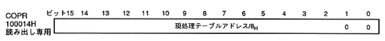

Return to previous page ｜ Return to menu ｜ Go to next page
-
■ 4.8 Current processing table address register
- Current operation table address register (COPR) indicates the command table address currently being processed. This is a read-only 16bit register at address 100014H.

- Current processing table address: bits 15-0
-
- A value that is obtained by dividing the command table address at which the parameter currently being processed is divided by 8H is written to this register.
- You can find the address of the command table currently being processed. The address value is always updated during command processing.
- In case of drawing end command fetching or drawing forcible termination, the updated address value is saved as it is until drawing start by frame change or plot trigger.
- When drawing end command is fetched, this is the drawing end command table address (/ 8H). If drawing is forcibly terminated, the command table address (/ 8H) forcibly terminated.
Since the boundary of the a - table address is 20HByte, the lower 2 bits of the register are fixed at 00B.
Return to previous page ｜ Return to menu ｜ Go to next page